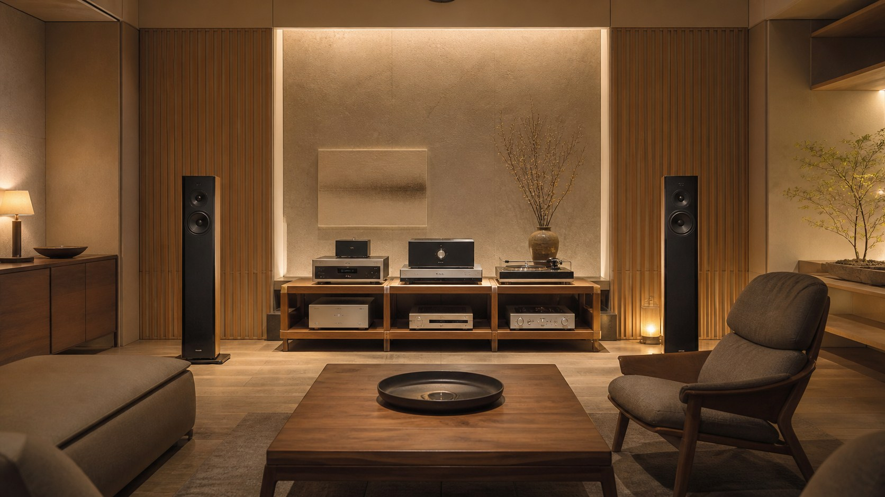

十二流派診断

意匠流

家元：空間斎（くうかんさい）
"意匠流とは、オーディオを音を出す道具ではなく、空間を律する造形物とみなし、その佇まいを尊ぶ設えの道です。"
意匠流の言葉
意匠流において、オーディオ機器は音の発生装置である以前に、空間の主役である。スピーカーの立ち姿、ラックの木目、ケーブルの這わせ方——それらすべてが、生活空間の美学を形成する要素として等しく重要視される。

この流派の修行者は、機材を選ぶ際に必ず「部屋に置いたとき」を想像する。音が良くとも、佇まいが空間の調和を乱すものは採用されない。配線は隠し、照明は音楽に合わせ、リスニングポジションさえもデザインの一部として設える。
向く環境は、Scandinavian designのスピーカーや日本の工芸家具と調和するビンテージ機器、あるいは現代建築に溶け込むスリムなシステムなど。耳だけでなく目でも音楽を聴く者の流派である。